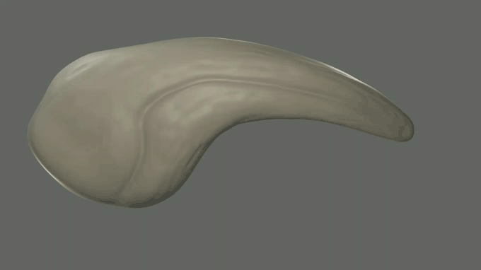
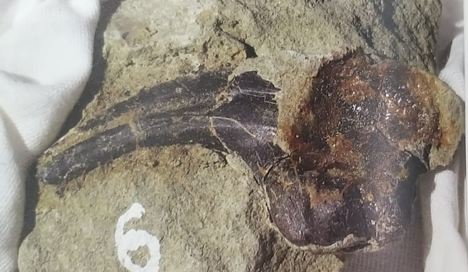

Аллозавр обитал в Якутии в раннем меловом периоде. Имел длинный череп с острыми внутрь направленными зубами. Аллозавр питался травоядными динозаврами, такими как стегозавр, камаразавр и другими животными того времени. Когти и зубы аллозавра найдены в районе Сунтарского улуса экспедицией с сунтарскими школьниками.

